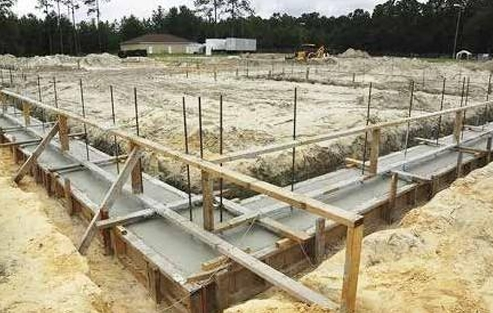
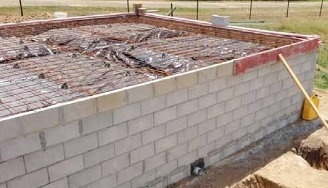
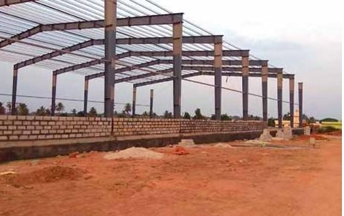
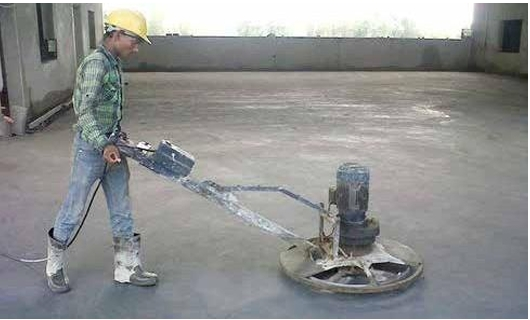

A **skyscraper** is a **tall, continuously habitable building** that significantly extends vertically, often shaping the skyline of urban areas. Our company specializes in **designing, engineering, and constructing high-rise buildings** that meet the demands of modern cities, incorporating **innovative designs, sustainable practices, and cutting-edge technologies**.
We follow a comprehensive approach to ensure the successful delivery of skyscraper projects:
We have contributed to the construction of several landmark skyscrapers:




Interested in developing a skyscraper project? Reach out to us today!
📞 Phone: +91 9980800925
📧 Email: info.deepafabtech@gmail.com